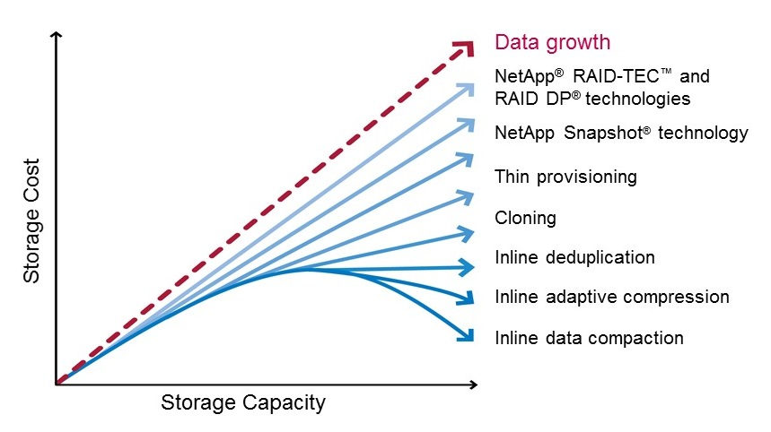
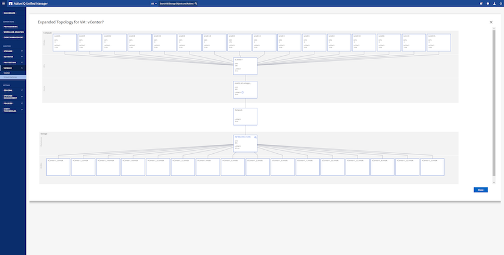

Demander de modifier un document
Demander de modifier un document Modifier sur GitHub
Modifier sur GitHub Guide des contributeurs
Guide des contributeursAutres fonctionnalités de vSphere
Contributeurs
Protection des données
La sauvegarde et la restauration rapide de vos machines virtuelles font partie des grands atouts de ONTAP pour vSphere. C’est facile à gérer au sein de vCenter grâce au plug-in SnapCenter pour VMware vSphere. Utilisez les copies Snapshot pour effectuer des copies rapides de votre machine virtuelle ou de votre datastore sans affecter les performances, puis envoyez-les à un système secondaire à l’aide de SnapMirror pour la protection des données hors site à plus long terme. Cette approche réduit l’espace de stockage et la bande passante réseau en stockant uniquement les informations modifiées.
SnapCenter vous permet de créer des règles de sauvegarde qui peuvent être appliquées à plusieurs tâches. Ces règles peuvent définir des fonctionnalités de planification, de conservation, de réplication et autres. Ils continuent à autoriser une sélection facultative de snapshots cohérents avec des machines virtuelles, tirant parti de la capacité de l’hyperviseur à suspendre les E/S avant d’effectuer un snapshot VMware. Cependant, en raison de l’impact des snapshots VMware sur les performances, ils ne sont généralement pas recommandés sauf si vous devez suspendre le système de fichiers invité. Utilisez plutôt les copies Snapshot de ONTAP pour une protection générale, et utilisez des outils applicatifs tels que les plug-ins SnapCenter pour protéger les données transactionnelles comme SQL Server ou Oracle. Ces copies Snapshot sont différentes des snapshots VMware (cohérence) et conviennent à une protection à long terme. Les snapshots VMware ne sont que de "recommandé" pour une utilisation à court terme en raison de performances et d’autres effets.
Ces plug-ins offrent des fonctionnalités étendues pour protéger les bases de données dans les environnements physiques et virtuels. VSphere permet de protéger les bases de données SQL Server ou Oracle dans lesquelles les données sont stockées sur des LUN RDM, des LUN iSCSI directement connectées au système d’exploitation invité ou des fichiers VMDK dans des datastores VMFS ou NFS. Les plug-ins permettent de spécifier différents types de sauvegardes de bases de données, de prendre en charge les sauvegardes en ligne ou hors ligne, et de protéger les fichiers de bases de données avec les fichiers journaux. Outre la sauvegarde et la restauration, ces plug-ins prennent également en charge le clonage des bases de données à des fins de développement ou de test.
La figure suivante représente un exemple de déploiement SnapCenter.

Pour des fonctionnalités améliorées de reprise sur incident, utilisez l’outil NetApp SRA pour ONTAP avec VMware site Recovery Manager. Outre la prise en charge de la réplication de datastores sur un site de reprise après incident, il permet également d’effectuer des tests sans interruption dans l’environnement de reprise après incident en clonant les datastores répliqués. L’automatisation intégrée à SRA simplifie également la reprise après incident et la reprotection de la production après panne.
Enfin, pour obtenir le plus haut niveau de protection des données, pensez à une configuration VMware vSphere Metro Storage Cluster (vMSC) utilisant NetApp MetroCluster. VMSC est une solution certifiée VMware qui combine la réplication synchrone à la mise en cluster basée sur baie, offrant les mêmes avantages qu’un cluster haute disponibilité, mais distribuée sur des sites distincts pour une protection contre les incidents sur site. NetApp MetroCluster permet de réaliser des configurations économiques pour la réplication synchrone avec restauration transparente depuis n’importe quel composant de stockage défaillant, et récupération par commande unique en cas d’incident sur le site. VMSC est décrit plus en détail dans "TR-4128".
Réclamations d’espace
L’espace peut être récupéré pour d’autres utilisations lorsque les machines virtuelles sont supprimées d’un datastore. Avec les datastores NFS, l’espace est immédiatement récupéré lorsqu’une machine virtuelle est supprimée (cette approche n’a bien évidemment de sens que lorsque le volume est provisionné, c’est-à-dire que la garantie du volume est définie sur aucune). Cependant, lorsque les fichiers sont supprimés du système d’exploitation invité de la machine virtuelle, l’espace n’est pas automatiquement récupéré avec un datastore NFS. Pour les datastores VMFS basés sur des LUN, ESXi ainsi que le système d’exploitation invité peuvent émettre des primitives VAAI UNMAP vers le stockage (encore une fois, lors de l’utilisation du provisionnement fin) pour récupérer de l’espace. Selon la version, ce support est manuel ou automatique.
Dans vSphere 5.5 et versions ultérieures, le vmkfstools –y la commande est remplacée par le esxcli storage vmfs unmap Commande, qui spécifie le nombre de blocs libres (voir VMware KB) "2057513" pour plus d’informations). Dans vSphere 6.5 et les versions ultérieures, lors de l’utilisation de VMFS 6, l’espace doit être automatiquement récupéré de manière asynchrone (voir la "Récupération de l’espace de stockage" Dans la documentation vSphere), mais peut également être exécutée manuellement si nécessaire. La commande UNMAP automatique est prise en charge par ONTAP, et les outils ONTAP pour VMware vSphere le définissent comme une priorité faible. N’oubliez pas que, lorsque vous provisionnez une LUN pour l’utiliser en tant que datastore VMFS, vous devez activer manuellement l’option d’allocation d’espace sur la LUN. Lors de l’utilisation des outils ONTAP pour VMware vSphere, la LUN est automatiquement configurée pour prendre en charge la réclamation d’espace et aucune autre action n’est requise. Voir "c’est ça" article de la base de connaissances pour en savoir plus.
Clonage des VM et des datastores
Le clonage d’un objet de stockage vous permet de créer rapidement des copies pour ensuite les utiliser, par exemple le provisionnement de machines virtuelles supplémentaires, les opérations de sauvegarde/restauration, etc. Dans vSphere, vous pouvez cloner une machine virtuelle, un disque virtuel, un volume virtuel ou un datastore. Une fois cloné, l’objet peut être davantage personnalisé, souvent par le biais d’un processus automatisé. VSphere prend en charge les clones de copie complète ainsi que les clones liés, pour assurer le suivi séparé des modifications apportées à l’objet d’origine.
Les clones liés permettent un gain d’espace considérable, mais ils augmentent la quantité d’E/S que vSphere gère pour la machine virtuelle, ce qui affecte les performances de cette machine virtuelle, et peut-être de l’hôte dans son ensemble. C’est pourquoi les clients de NetApp utilisent souvent des clones basés sur les systèmes de stockage pour bénéficier des avantages des deux environnements : une utilisation efficace du stockage et une meilleure performance.
La figure suivante représente le clonage ONTAP.

Le clonage peut être déchargé sur les systèmes qui exécutent le logiciel ONTAP via plusieurs mécanismes, en général au niveau de la machine virtuelle, du volume ou du datastore. Ces champs d’application incluent :
-
Vvols avec le fournisseur NetApp vSphere APIs for Storage Awareness (VASA). Les clones ONTAP sont utilisés pour prendre en charge les copies vvol Snapshot gérées par vCenter, qui sont peu gourmandes en espace avec un minimum d’effets d’E/S pour les créer et les supprimer. Les machines virtuelles peuvent également être clonées via vCenter, qui sont également déchargées vers ONTAP, que ce soit dans un datastore/volume unique ou entre les datastores/volumes.
-
Clonage et migration de vSphere à l’aide des API vSphere – intégration de baies (VAAI). Les opérations de clonage de VM peuvent être déchargées sur ONTAP dans les environnements SAN et NAS (NetApp fournit un plug-in ESXi pour que VAAI for NFS). VSphere ne décharge les opérations sur les machines virtuelles inactives (désactivées) dans un datastore NAS, tandis que les opérations sur les machines virtuelles fortement sollicitées (clonage et stockage vMotion) sont également déchargées pour le système SAN. ONTAP utilise l’approche la plus efficace selon la source, la destination et les licences des produits installés. Cette fonctionnalité est également utilisée par VMware Horizon View.
-
SRA (utilisé avec VMware site Recovery Manager). Ici, des clones sont utilisés pour tester la restauration de la réplique de reprise après incident sans interruption.
-
Sauvegarde et restauration à l’aide d’outils NetApp tels que SnapCenter. Les clones de machine virtuelle sont utilisés pour vérifier les opérations de sauvegarde ainsi que pour monter une sauvegarde de machine virtuelle, de sorte que les fichiers individuels puissent être copiés.
Le clonage ONTAP Offloaded peut être appelé par les outils VMware, NetApp et tiers. Les clones déchargés sur ONTAP présentent plusieurs avantages. Elles sont peu gourmandes en espace dans la plupart des cas, et n’ont besoin que de systèmes de stockage pour modifier les objets. Cela n’a aucun impact supplémentaire sur les performances en lecture et en écriture. Dans certains cas, le partage des blocs dans des caches haute vitesse améliore les performances. Ils délester également le serveur ESXi de la charge des cycles CPU et des E/S réseau. Il est possible de décharger des copies dans un data store traditionnel grâce à un volume FlexVol, de manière rapide et efficace avec une licence FlexClone, mais les copies entre volumes FlexVol peuvent être plus lentes. Si vous maintenez les modèles de machine virtuelle comme source de clones, envisagez de les placer dans le volume du datastore (utilisez les dossiers ou les bibliothèques de contenu pour les organiser) afin de créer des clones rapides et compacts.
Vous pouvez également cloner un volume ou une LUN directement au sein de ONTAP afin de cloner un datastore. Grâce aux datastores NFS, la technologie FlexClone peut cloner un volume entier. Le clone peut être exporté depuis ONTAP et monté par ESXi en tant qu’autre datastore. Pour les datastores VMFS, ONTAP peut cloner une LUN au sein d’un volume ou d’un volume complet, y compris une ou plusieurs LUN au sein de celle-ci. Une LUN contenant un VMFS doit être mappée sur un groupe d’initiateurs ESXi, puis une nouvelle signature définie par ESXi doit être montée et utilisée comme datastore standard. Pour certains cas d’utilisation temporaire, un VMFS cloné peut être monté sans nouvelle signature. Une fois le datastore cloné, les ordinateurs virtuels internes peuvent être enregistrés, reconfigurés et personnalisés comme s’ils étaient individuellement clonés.
Dans certains cas, des fonctionnalités supplémentaires sous licence peuvent être utilisées pour améliorer le clonage, telles que SnapRestore pour la sauvegarde ou FlexClone. Ces licences sont souvent incluses dans les packs de licence sans frais supplémentaires. Une licence FlexClone est requise pour les opérations de clonage vvol et pour la prise en charge des copies Snapshot gérées d’un volume virtuel (qui sont déchargées de l’hyperviseur vers ONTAP). Une licence FlexClone peut également améliorer certains clones VAAI lorsqu’ils sont utilisés dans un datastore/volume (création de copies instantanées et compactes à la place de copies de bloc). Elle est également utilisée par SRA pour tester la restauration d’une réplique de reprise après incident et SnapCenter pour les opérations de clonage, et pour parcourir les copies de sauvegarde afin de restaurer des fichiers individuels.
Efficacité du stockage et provisionnement fin
NetApp s’est élevé à la pointe de l’innovation en matière d’efficacité du stockage, avec notamment la première déduplication pour les charges de travail primaires et la compaction des données à la volée qui améliore la compression et stocke de façon efficace les petits fichiers et les E/S. ONTAP prend en charge la déduplication à la volée et en arrière-plan, ainsi que la compression à la volée et en arrière-plan.
La figure suivante décrit l’effet combiné des fonctions d’efficacité du stockage ONTAP.

Voici quelques recommandations sur l’utilisation de l’efficacité du stockage ONTAP dans un environnement vSphere :
-
Le volume des économies de déduplication de données réalisées dépend de la similarité des données. Avec ONTAP 9.1 et les versions antérieures, la déduplication des données était appliquée au niveau du volume, mais avec la déduplication de l’agrégat dans ONTAP 9.2 et versions ultérieures, les données sont dédupliquées entre tous les volumes d’un agrégat dans les systèmes AFF. Vous n’avez plus besoin de regrouper des systèmes d’exploitation similaires et des applications similaires au sein d’un même datastore afin d’optimiser les économies.
-
Pour bénéficier des avantages de la déduplication dans un environnement de blocs, les LUN doivent être provisionnées à fin. Bien que la LUN soit toujours perçue par l’administrateur de la machine virtuelle en termes de capacité provisionnée, les économies de déduplication sont renvoyées vers le volume afin qu’il soit utilisé pour d’autres besoins. NetApp recommande de déployer ces LUN dans des volumes FlexVol qui également font l’objet d’un provisionnement fin (les outils ONTAP pour VMware vSphere dimensionnez le volume à environ 5 % plus grand que la LUN).
-
Le provisionnement fin est également recommandé (et constitue la valeur par défaut) pour les volumes NFS FlexVol. Dans un environnement NFS, les économies de déduplication sont immédiatement visibles pour les administrateurs du stockage et des machines virtuelles avec des volumes à provisionnement fin.
-
Le provisionnement fin s’applique également aux machines virtuelles, où NetApp recommande généralement des VMDK à provisionnement fin plutôt qu’thick. Lors de l’utilisation du provisionnement fin, veillez à surveiller l’espace disponible à l’aide des outils ONTAP pour VMware vSphere, ONTAP ou d’autres outils disponibles afin d’éviter les problèmes de manque d’espace.
-
Notez que le provisionnement fin avec les systèmes ONTAP n’a aucune incidence sur les performances. Les données sont écrites sur l’espace disponible de sorte que les performances d’écriture et de lecture sont optimisées. Malgré ce fait, certains produits tels que la mise en cluster de basculement Microsoft ou d’autres applications à faible latence peuvent nécessiter un provisionnement garanti ou fixe, et il est judicieux de suivre ces exigences pour éviter des problèmes de support.
-
Pour des économies optimales, envisagez de planifier la déduplication en arrière-plan sur des systèmes sur disque dur ou la déduplication en arrière-plan automatique sur les systèmes AFF. Cependant, les processus planifiés utilisent des ressources système en cours d’exécution. De cette manière, idéalement, ils doivent être programmés pendant les heures moins actives (par exemple, les week-ends) ou d’être plus fréquemment exécutés afin de réduire la quantité de données modifiées à traiter. La déduplication automatique en arrière-plan sur les systèmes AFF a beaucoup moins d’impact sur les activités prioritaires. La compression en arrière-plan (pour les systèmes sur disque dur) consomme également des ressources. Elle doit donc être considérée uniquement pour les charges de travail secondaires dont les besoins de performances sont limités.
-
Les systèmes AFF de NetApp utilisent principalement des fonctionnalités d’efficacité du stockage à la volée. Lorsque les données sont déplacées vers eux à l’aide des outils NetApp qui utilisent la réplication de blocs, tels que 7-mode transition Tool, SnapMirror ou Volume Move, il peut être utile d’exécuter des scanners de compression et de compaction en vue d’optimiser le gain d’efficacité. Consultez ce support NetApp "Article de la base de connaissances" pour plus d’informations.
-
Les copies Snapshot peuvent verrouiller les blocs qui pourraient être réduits par la compression ou la déduplication. Lorsque vous utilisez l’efficacité en arrière-plan planifiée ou des scanners à usage unique, assurez-vous qu’ils s’exécutent et qu’ils sont terminés avant la prochaine copie Snapshot. Vérifiez les copies Snapshot et la conservation pour vous assurer que seules les copies Snapshot nécessaires sont conservées, en particulier avant l’exécution d’une tâche d’arrière-plan ou d’analyse.
Le tableau suivant fournit des conseils en matière d’efficacité du stockage pour les charges de travail virtualisées sur différents types de stockage ONTAP :
| Charge de travail | Recommandations en matière d’efficacité du stockage | ||
|---|---|---|---|
AFF |
Flash Pool |
Disques durs |
|
VDI et SVI |
Pour les charges de travail primaires et secondaires, utiliser :
|
Pour les charges de travail primaires et secondaires, utiliser :
|
Pour les charges de travail primaires, utiliser :
Pour les charges de travail secondaires, utiliser :
|
La qualité de service (QoS)
Les systèmes qui exécutent le logiciel ONTAP peuvent utiliser la fonctionnalité de QoS du stockage de ONTAP pour limiter le débit en Mbit/s et/ou E/S par seconde (IOPS) pour différents objets de stockage tels que des fichiers, des LUN, des volumes, ou des SVM entiers.
Les limites de débit permettent de contrôler les charges de travail inconnues ou de test avant le déploiement pour s’assurer qu’elles n’affectent pas les autres charges de travail. Elles peuvent également être utilisées pour contraindre une charge de travail dominante après son identification. Des niveaux minimaux de service basés sur des IOPS sont également pris en charge pour assurer des performances prévisibles pour les objets SAN d’ONTAP 9.2 et pour les objets NAS d’ONTAP 9.3.
Avec un datastore NFS, une politique de qualité de services peut s’appliquer à tout le volume FlexVol ou à tous les fichiers VMDK de l’environnement IT. Avec les datastores VMFS utilisant des LUN ONTAP, les règles de QoS peuvent être appliquées au volume FlexVol contenant les LUN ou les LUN individuels, mais pas aux fichiers VMDK individuels, car ONTAP ne connaît pas le système de fichiers VMFS. Lors de l’utilisation de vvols, il est possible de définir une qualité de service minimale et/ou maximale sur des machines virtuelles individuelles en utilisant le profil de capacité de stockage et la règle de stockage des machines virtuelles.
Le débit maximal de QoS sur un objet peut être défini en Mbit/s et/ou IOPS. Si les deux sont utilisés, la première limite atteinte est appliquée par ONTAP. Une charge de travail peut contenir plusieurs objets et une règle de QoS peut être appliquée à un ou plusieurs workloads. Lorsqu’une règle est appliquée à plusieurs workloads, celle-ci partage la limite totale de la règle. Les objets imbriqués ne sont pas pris en charge (par exemple, les fichiers d’un volume ne peuvent pas chacun avoir leur propre stratégie). La valeur minimale de qualité de service ne peut être définie que dans les IOPS.
Les outils suivants sont actuellement disponibles pour la gestion des règles de QoS de ONTAP et leur application aux objets :
-
INTERFACE DE LIGNE DE COMMANDES DE ONTAP
-
ONTAP System Manager
-
OnCommand Workflow Automation
-
Active IQ Unified Manager
-
Kit d’outils NetApp PowerShell pour ONTAP
-
Outils ONTAP pour VMware vSphere VASA Provider
Pour affecter une politique de QoS à un VMDK sur NFS, suivez les consignes suivantes :
-
La politique doit être appliquée au
vmname- flat.vmdkqui contient l’image réelle du disque virtuel, pas levmname.vmdk(fichier de descripteur de disque virtuel) ouvmname.vmx(Fichier de descripteur de machine virtuelle). -
N’appliquez pas de règles aux autres fichiers VM tels que les fichiers d’échange virtuels (
vmname.vswp). -
Lors de l’utilisation du client Web vSphere pour trouver des chemins de fichiers (datastore > fichiers), notez qu’il combine les informations de l'
- flat.vmdket. vmdket montre simplement un fichier avec le nom du. vmdkmais la taille du- flat.vmdk. Autres-flatdans le nom du fichier pour obtenir le chemin correct.
Pour affecter une QoS à une LUN, y compris VMFS et RDM, le SVM ONTAP (affiché comme vServer), le chemin LUN et le numéro de série peuvent être obtenus du menu systèmes de stockage de la page d’accueil des outils ONTAP pour VMware vSphere. Sélectionner le système de stockage (SVM), puis les objets associés > SAN. Utilisez cette approche lors de la spécification de QoS à l’aide de l’un des outils ONTAP.
Il est possible de définir une qualité de service minimale et maximale facilement sur une machine virtuelle basée sur des volumes grâce aux outils ONTAP pour VMware vSphere ou Virtual Storage Console 7.1 et versions ultérieures. Lors de la création du profil de capacité de stockage pour le conteneur vVol, spécifiez une valeur d’IOPS max et/ou min sous la capacité de performances, puis référencez ce SCP avec la règle de stockage de la machine virtuelle. Utilisez cette règle lors de la création de la machine virtuelle ou appliquez-la à une machine virtuelle existante.
Les datastores FlexGroup offrent des fonctionnalités QoS améliorées lors de l’utilisation des outils ONTAP pour VMware vSphere 9.8 et versions ultérieures. Vous pouvez facilement définir la qualité de service sur toutes les machines virtuelles d’un datastore ou sur des machines virtuelles spécifiques. Consultez la section FlexGroup de ce rapport pour plus d’informations.
QoS ONTAP et SIOC VMware
La QoS ONTAP et la fonctionnalité VMware vSphere Storage I/O Control (SIOC) sont des technologies complémentaires que les administrateurs vSphere et du stockage peuvent utiliser ensemble pour gérer les performances des VM vSphere hébergées sur des systèmes exécutant le logiciel ONTAP. Chaque outil a ses propres forces, comme le montre le tableau suivant. En raison des différents champs d’application de VMware vCenter et de ONTAP, certains objets peuvent être vus et gérés par un système et non par l’autre.
| Propriété | QoS de ONTAP | SIOC VMware |
|---|---|---|
Lorsqu’il est actif |
La règle est toujours active |
Actif en cas de conflit (latence du datastore supérieure au seuil) |
Type d’unités |
IOPS, Mo/sec |
IOPS, partages |
Étendue vCenter ou des applications |
Plusieurs environnements vCenter, d’autres hyperviseurs et applications |
Un seul serveur vCenter |
Définir la qualité de service sur la machine virtuelle ? |
VMDK sur NFS uniquement |
VMDK sur NFS ou VMFS |
Définir la qualité de service sur la LUN (RDM) ? |
Oui. |
Non |
Définir la QoS sur LUN (VMFS) ? |
Oui. |
Non |
Définir la qualité de service sur le volume (datastore NFS) ? |
Oui. |
Non |
Qualité de service définie sur un SVM (locataire) ? |
Oui. |
Non |
Approche basée sur des règles ? |
Oui. Elles peuvent être partagées par toutes les charges de travail dans la règle ou appliquées en totalité à chaque charge de travail dans la règle. |
Oui, avec vSphere 6.5 et versions ultérieures. |
Licence requise |
Inclus avec ONTAP |
Enterprise plus |
Planificateur de ressources distribué de stockage VMware
VMware Storage Distributed Resource Scheduler (SDRS) est une fonctionnalité vSphere qui place les machines virtuelles sur un stockage en fonction de la latence d’E/S actuelle et de l’utilisation de l’espace. Il déplace ensuite la machine virtuelle ou les VMDK sans interruption entre les datastores d’un cluster de datastores (également appelé pod), en sélectionnant le meilleur datastore pour placer la machine virtuelle ou les VMDK dans le cluster de datastore. Un cluster de datastores est un ensemble de datastores similaires qui sont agrégés dans une unité de consommation unique du point de vue de l’administrateur vSphere.
Avec LES SDRS associés aux outils NetApp ONTAP pour VMware vSphere, vous devez d’abord créer un datastore avec le plug-in, utiliser vCenter pour créer le cluster de datastore, puis y ajouter le datastore. Une fois le cluster datastore créé, des datastores supplémentaires peuvent être ajoutés au cluster datastore directement à partir de l’assistant de provisionnement sur la page Détails.
Les autres meilleures pratiques ONTAP en matière DE SDRS sont les suivantes :
-
Tous les datastores du cluster doivent utiliser le même type de stockage (SAS, SATA ou SSD, par exemple), être tous des datastores VMFS ou NFS et disposer des mêmes paramètres de réplication et de protection.
-
Envisagez d’utiliser DES DTS en mode par défaut (manuel). Cette approche vous permet d’examiner les recommandations et de décider s’il faut les appliquer ou non. Notez les effets suivants des migrations VMDK :
-
Lorsque DES DTS déplacent des VMDK entre les datastores, les économies d’espace éventuelles obtenues grâce au clonage ou à la déduplication ONTAP sont perdues. Vous pouvez réexécuter la déduplication pour récupérer ces économies.
-
Une fois QUE LES DTS ont déplacé les VMDK, NetApp recommande de recréer les copies Snapshot sur le datastore source, car l’espace est autrement verrouillé par la machine virtuelle qui a été déplacée.
-
Le déplacement des VMDK entre les datastores du même agrégat n’a que peu d’avantages et LES DTS n’ont pas de visibilité sur d’autres charges de travail qui pourraient partager l’agrégat.
-
Gestion de stockage basée sur des règles et vVols
Les API VMware vSphere pour Storage Awareness (VASA) permettent à un administrateur du stockage de configurer des datastores avec des fonctionnalités bien définies et de permettre à l’administrateur des VM de les utiliser chaque fois que nécessaire pour provisionner des machines virtuelles sans avoir à interagir les unes avec les autres. Il est intéressant de considérer cette approche afin de voir comment elle peut rationaliser vos opérations de stockage de virtualisation et éviter de nombreuses tâches triviales.
Avant de procéder à VASA, les administrateurs des VM pouvaient définir des règles de stockage des VM, mais ils devaient travailler avec l’administrateur du stockage pour identifier les datastores appropriés, souvent à l’aide de la documentation ou des conventions de nom. Grâce à VASA, l’administrateur du stockage peut définir un éventail de fonctionnalités de stockage, notamment la performance, le Tiering, le chiffrement et la réplication. Un ensemble de capacités pour un volume ou un ensemble de volumes est appelé « profil de capacité de stockage » (SCP).
Le SCP prend en charge la qualité de service minimale et/ou maximale pour les données vVvols d’une machine virtuelle. La QoS minimale est prise en charge uniquement sur les systèmes AFF. Les outils ONTAP pour VMware vSphere comprennent un tableau de bord affichant des performances granulaires de machine virtuelle et une capacité logique pour vVvols sur les systèmes ONTAP.
La figure suivante représente le tableau de bord des outils ONTAP pour VMware vSphere 9.8 vvols.

Une fois le profil de capacité de stockage défini, il peut être utilisé pour provisionner les machines virtuelles à l’aide de la règle de stockage qui identifie ses exigences. Le mappage entre la stratégie de stockage de la machine virtuelle et le profil de capacité de stockage du datastore permet à vCenter d’afficher la liste des datastores compatibles à sélectionner. C’est ce que l’on appelle la gestion du stockage basée sur des règles.
Vasa fournit la technologie permettant d’interroger le stockage et de renvoyer un ensemble de fonctionnalités de stockage vers vCenter. Les fournisseurs de VASA fournissent la traduction entre les API et les constructions du système de stockage et les API VMware que vCenter comprend. NetApp VASA Provider pour ONTAP est proposé dans le cadre des outils ONTAP pour la machine virtuelle de l’appliance VMware vSphere. Le plug-in vCenter fournit l’interface de provisionnement et de gestion des datastores vvol, ainsi que la possibilité de définir des profils de capacité de stockage (SCPS).
ONTAP prend en charge les datastores VMFS et NFS vvol. L’utilisation de vvols avec des datastores SAN apporte certains des avantages de NFS tels que la granularité au niveau des VM. Voici quelques meilleures pratiques à prendre en compte, et vous trouverez des informations supplémentaires dans le "TR-4400":
-
Un datastore vvol peut être constitué de plusieurs volumes FlexVol sur plusieurs nœuds de cluster. L’approche la plus simple est un datastore unique, même si les volumes ont des capacités différentes. Grâce à la gestion du stockage basée sur des règles, un volume compatible est utilisé pour la machine virtuelle. Cependant, ces volumes doivent tous faire partie d’un seul SVM ONTAP et être accessibles via un seul protocole. Une LIF par nœud suffit pour chaque protocole. Évitez d’utiliser plusieurs versions de ONTAP dans un datastore vvol unique car les capacités de stockage peuvent varier d’une version à l’autre.
-
Utilisez les outils ONTAP pour le plug-in VMware vSphere pour créer et gérer des datastores vvol. En plus de gérer le datastore et son profil, il crée automatiquement un terminal de protocole permettant d’accéder aux vvols si nécessaire. Si les LUN sont utilisées, notez que les terminaux PE sont mappés à l’aide des ID de LUN 300 et supérieurs. Vérifiez que le paramètre système avancé de l’hôte ESXi est défini
Disk.MaxLUNAutorise un ID de LUN supérieur à 300 (la valeur par défaut est 1,024). Pour ce faire, sélectionnez l’hôte ESXi dans vCenter, puis l’onglet configurer et RechercherDisk.MaxLUNDans la liste des paramètres système avancés. -
N’installez pas ni ne migrez de VASA Provider, vCenter Server (appliance ou base Windows), ou les outils ONTAP pour VMware vSphere lui-même vers un datastore vvols, car ils sont ensuite interdépendants et limitent votre capacité à les gérer en cas de panne de courant ou d’autre perturbation du data Center.
-
Sauvegarder régulièrement la machine virtuelle de VASA Provider. Au moins, créez des copies Snapshot toutes les heures du data store traditionnel qui contient VASA Provider. Pour en savoir plus sur la protection et la restauration de VASA Provider, consultez cette section "Article de la base de connaissances".
La figure suivante montre les composants de vvols.

Migration et sauvegarde dans le cloud
ONTAP permet également la prise en charge étendue du cloud hybride en fusionnant les systèmes de votre cloud privé sur site avec des capacités de cloud public. Voici quelques solutions clouds NetApp qui peuvent être utilisées en association avec vSphere :
-
Cloud volumes. NetApp Cloud Volumes Service pour AWS ou GCP et Azure NetApp Files pour ANF offrent des services de stockage gérés multi-protocoles hautes performances dans les principaux environnements de cloud public. Ils peuvent être utilisés directement par les invités de machine virtuelle VMware Cloud.
-
Cloud Volumes ONTAP. le logiciel de gestion des données NetApp Cloud Volumes ONTAP permet de contrôler et de protéger les données et d’optimiser l’efficacité du stockage, tout en bénéficiant de la flexibilité du cloud de votre choix. Cloud Volumes ONTAP est un logiciel de gestion des données cloud basé sur le logiciel de stockage NetApp ONTAP. Utilisez-les conjointement avec Cloud Manager pour déployer et gérer des instances Cloud Volumes ONTAP avec vos systèmes ONTAP sur site. Profitez des fonctionnalités SAN NAS et iSCSI avancées grâce à la gestion unifiée des données, notamment les copies Snapshot et la réplication SnapMirror.
-
Services cloud. utilisez Cloud Backup Service ou SnapMirror Cloud pour protéger les données des systèmes sur site qui utilisent un stockage de cloud public. Cloud Sync vous aide à migrer et à synchroniser vos données sur les systèmes NAS, les magasins d’objets et le stockage Cloud Volumes Service.
-
FabricPool. FabricPool offre un Tiering simple et rapide pour les données ONTAP. Les blocs non sollicités de copies Snapshot peuvent être migrés vers un magasin d’objets dans des clouds publics ou privés StorageGRID et sont automatiquement rappelés lors de l’accès aux données ONTAP. Vous pouvez également utiliser le Tier objet comme troisième niveau de protection pour les données déjà gérées par SnapVault. Cette approche peut vous permettre de "Stockage d’un plus grand nombre de copies Snapshot de vos machines virtuelles" Sur les systèmes de stockage ONTAP primaires et/ou secondaires.
-
ONTAP Select. utilisez le stockage Software-defined NetApp pour étendre votre cloud privé sur Internet aux sites et bureaux distants, où vous pouvez utiliser ONTAP Select pour prendre en charge les services de blocs et de fichiers ainsi que les mêmes fonctionnalités de gestion de données vSphere que votre data Center d’entreprise.
Lors de la conception de vos applications basées sur une VM, pensez à la mobilité future du cloud. Par exemple, plutôt que de placer les fichiers d’application et de données en même temps que les fichiers de données, utilisez une exportation LUN ou NFS distincte. Cela vous permet de migrer la machine virtuelle et les données séparément vers des services cloud.
Chiffrement pour les données vSphere
Aujourd’hui, les exigences croissantes en matière de protection des données au repos sont liées au chiffrement. Bien que l’accent initial était mis sur l’information financière et sur la santé, il y a de plus en plus d’intérêt à protéger toutes les informations, qu’elles soient stockées dans des fichiers, des bases de données ou d’autres types de données.
Les systèmes qui exécutent le logiciel ONTAP simplifient la protection de toutes les données au repos. NetApp Storage Encryption (NSE) utilise des lecteurs de disque à chiffrement automatique avec ONTAP pour protéger les données SAN et NAS. NetApp propose également NetApp Volume Encryption et NetApp Aggregate Encryption comme une approche logicielle simple pour le chiffrement des volumes sur tous les disques. Ce chiffrement logiciel ne nécessite pas de lecteurs de disque spéciaux ou de gestionnaires de clés externes et est disponible pour les clients ONTAP sans frais supplémentaires. Vous pouvez procéder à une mise à niveau et commencer à l’utiliser sans perturber vos clients ou applications. Elles sont validées par la norme FIPS 140-2 de niveau 1, y compris le gestionnaire de clés intégré.
Il existe plusieurs approches de protection des données des applications virtualisées qui s’exécutent sur VMware vSphere. L’une d’elles consiste à protéger les données avec les logiciels internes à la machine virtuelle au niveau du système d’exploitation invité. Les nouveaux hyperviseurs, tels que vSphere 6.5, prennent désormais en charge le cryptage au niveau des machines virtuelles. Cependant, le chiffrement logiciel NetApp est simple et facile :
-
Aucun effet sur la CPU du serveur virtuel. certains environnements de serveurs virtuels nécessitent chaque cycle CPU disponible pour leurs applications, mais les tests ont montré que jusqu’à 5x ressources CPU sont nécessaires avec le cryptage au niveau de l’hyperviseur. Même si le logiciel de chiffrement prend en charge les instructions AES-ni d’Intel pour décharger une charge de travail de chiffrement (comme le fait le chiffrement logiciel NetApp), cette approche peut ne pas être possible du fait de la nécessité de nouveaux processeurs non compatibles avec des serveurs plus anciens.
-
Gestionnaire de clés intégré inclus. le chiffrement logiciel NetApp inclut un gestionnaire de clés intégré sans frais supplémentaires, ce qui simplifie les prises en main sans serveurs de gestion des clés haute disponibilité complexes à acheter et à utiliser.
-
Aucun effet sur l’efficacité du stockage. les techniques d’efficacité du stockage comme la déduplication et la compression sont largement utilisées aujourd’hui et sont essentielles pour exploiter les supports disque Flash de façon rentable. Toutefois, les données cryptées ne sont en général pas dédupliquées ou compressées. Le cryptage du stockage et du matériel NetApp fonctionne à un niveau inférieur et permet l’utilisation totale des fonctionnalités d’efficacité du stockage NetApp, contrairement aux autres approches.
-
Chiffrement granulaire simple des datastores. avec NetApp Volume Encryption, chaque volume bénéficie de sa propre clé AES 256 bits. Si vous devez le modifier, utilisez une seule commande. Cette approche est idéale si vous disposez de plusieurs locataires ou si vous devez prouver votre chiffrement indépendant pour différents services ou applications. Ce chiffrement est géré au niveau du datastore, ce qui est bien plus simple que de gérer des machines virtuelles individuelles.
Il est facile de commencer avec le chiffrement logiciel. Une fois la licence installée, il vous suffit de configurer le gestionnaire de clés intégré en spécifiant une phrase secrète, puis de créer un volume ou de déplacer un volume côté stockage pour activer le chiffrement. NetApp travaille à ajouter une prise en charge plus intégrée des fonctionnalités de cryptage dans les prochaines versions de ses outils VMware.
Active IQ Unified Manager
Active IQ Unified Manager permet d’avoir une grande visibilité sur les machines virtuelles de votre infrastructure virtuelle et assure la surveillance et le dépannage des problèmes de stockage et de performances dans votre environnement virtuel.
Un déploiement d’infrastructure virtuelle standard sur ONTAP comporte divers composants répartis sur les couches de calcul, de réseau et de stockage. Tout ralentissement des performances dans une application VM peut survenir en raison de la combinaison de latences rencontrées par les différents composants au niveau des couches respectives.
La capture d’écran suivante présente la vue des machines virtuelles Active IQ Unified Manager.

Unified Manager présente le sous-système sous-jacent d’un environnement virtuel dans une vue topologique afin de déterminer si un problème de latence a eu lieu dans le nœud de calcul, le réseau ou le stockage. La vue indique également l’objet spécifique qui provoque le décalage des performances lors de la réalisation des étapes correctives et de la résolution du problème sous-jacent.
La capture d’écran suivante montre la topologie étendue AIQUM.
